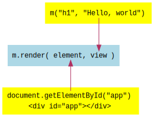

The first thing that we will do is render something onto the page - a "Hello, world" message,
of course. With Mithril, this is accomplished using m.render. When calling this function, we
must pass two parameters:
We can use the m() function to describe the HTML structure of what we want to render and
produce a vnode suitable for passing to m.render.
The DOM element into which we want to render could be document.body. However, I will use an
HTML file with an element inside of it. The element that has the app id and can be retrieved
using document.getElementById("app"). The reason I am using an HTML file is that this enables you
to render other things on the page, and have your app (or multiple apps) occupy specific places on
the page.
To produce the vnode for our message, we can simply use m("h1", "Hello, world"). This will render
<h1>Hello, world</h1>.
Here is the code to render the message onto the page:
Notice that app.html contains the element into which we render, and m(...) produces the
vnode. These are the two arguments that we pass to m.render.

Edit the code above and try out these exercises. You can see the output on the right, so you can confirm that your code works as expected.
h1 tag to something else, and change the message.app.html, add something before and after the id element, and confirm that they are
displayed before and after the message that you are rendering.element into which to render, to document.body. Notice that your message
now overwrites anything that you had in the app.html file.When you are ready, move on to the next lesson: 02 - View Function.